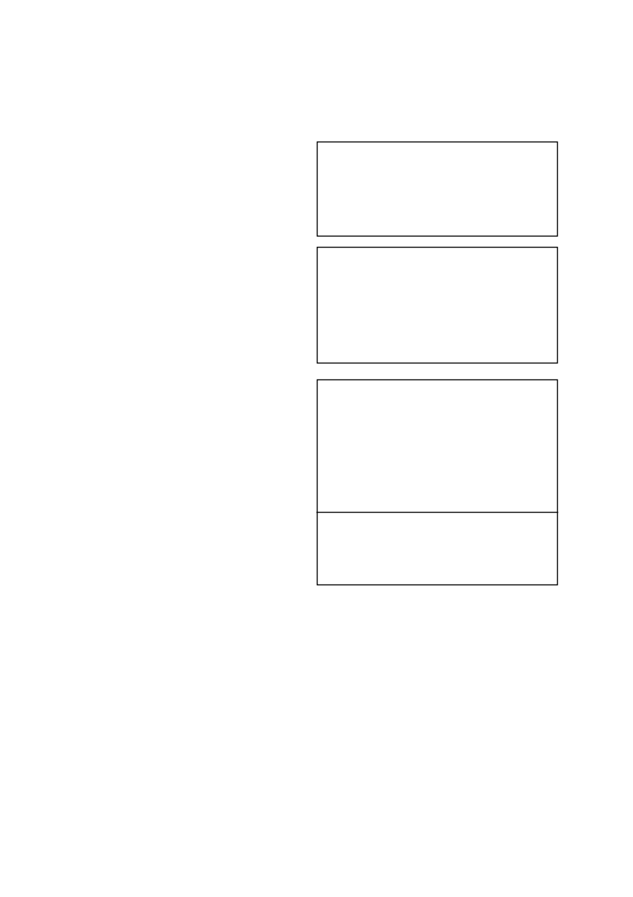

SERVIAN
/ 2
word, indien in harde water (Ca
2+
+ Mg
2+
>150 dpm) toegedien
word.
Waarskuwing:
Moontlike beskadiging van triasien sensi-
tiewe gewasse
•
Waar gronde met kalk behandel is om die pH te verhoog mag
die moontlikheid van gewas beskadiging dramaties verhoog
in gronde waar triasienes voorheen toegedien is. Dit gebeur
as gevolg van die triasien molekule wat op die klei kompleks
vervang word met kalsium katione en die triasien dus meer
beskikbaar word in die grondwater kompleks.
•
Geen triasien sensitiewe gewasse moet na kalk toedienings
geplant word nie. Dit is selfs van toepassing indien triasiene
teen wisselbou dosisse gespuit is in vorige jare. Slegs mielies
moet geplant word direk na kalk toedienings.
•
Triasien sensitiewe gewasse sluit in alle breëblaargewasse
soos die boon gewasse en sonneblomme asook alle klein-
graangewasse soos koring.
•
Hierdie waarskuwing waarborg egter nie dat geen skade aan
selfs mielies in die daaropvolgende aanplanting sal voorkom
nie aangesien groot volumes triasiene beskikbaar mag raak
afhangende van die volume kalk wat toegedien word en die
reënval wat kan voorkom.
Waarskuwing:
Moontlike
verhoogde effektiwiteit, fitotok-
sisiteit en verlengde nawerking
•
‘n Verhoging in die grond pH na vlakke bokant 7 skep toestande
waar verhoogde effektiwiteit en gepaardgaande ver
laging in
selektiwiteit kan voorkom. Hierdie verhoogde pH vlakke kan
ook verlengde grondnawerking tot gevolg hê wat veral onder
besproeiing die opvolg gewaskeuse mag beïnvloed.
•
Waar grond pH verstellings gedoen is, moet gelet word op die
gebruik van sulfoniel ureum onkruiddoders, triazolopiri midien
sulfonanilied onkruiddoders en imidasolinoon onkruiddoders
wat almal baie sensitief is vir grond pH fluk tuasies.
Kontak u plaaslike SYNGENTA verteenwoordiger voordat
op enige bekalkings program besluit word om gewas
keuses en gewas beskermings programme te bespreek.
MINIMUM WAGPERIODES EN WISSELBOU AANWYSINGS
Gewasse kan baie sensitief wees teenoor lae konsentrasies
SERVIAN
in die grond.
Dus moet deeglike oorweging gegee word
aan wisselboubeplanning alvorens
SERVIAN
gebruik word.
Die minimum wagperiode dui op die tydsverloop vanaf die laaste
toediening van
SERVIAN
tot die verwagte tyd van aanplanting
van ‘n opvolggewas.
Om skade aan opvolggewasse te voorkom, moet die volgende
wagperiodes in ag geneem word:
•
Avokado, sitrus, mangoes, graansorghum, koring en mielies -
1 maand.
•
Droëbone - 3 maande.
•
Aartappels - 6 maande.
•
Sonneblom - 13 maande.
•
Vir alle ander gewasse word ‘n wagperiode van ten minste 24
maande aanbeveel, voorafgegaan deur ‘n toetsplanting.
Die wagperiodes waar 1
l
/ha addisionele SORGOMIL GOLD 600
SC (L6221) of GESAPRIM SUPER (L3914) of GARDOMIL GOLD
(L6246) by
SERVIAN
gevoeg word is as volg:
•
Mielies - 1 maand.
•
Graansorghum, koring, droëbone en aartappels - 9 maande.
•
Sonneblom - 13 maande.
•
Vir alle ander gewasse word ‘n wagperiode van ten minste 24
maande aanbeveel, voorafgegaan deur ‘n toetsplanting.
Op gronde met 0 - 10% klei in die Noordwes Provinsie en
Noordwes Vrystaat of op kalkryke gronde kan die aan be-
vole dosisse van GARDOMIL GOLD, GESAPRIM SUPER en
SORGOMIL GOLD 600 SC nog steeds opvolggewasse beskadig.
Belangrik
Bogenoemde wagperiodes geld slegs indien die korrekte hoeveel-
heid
SERVIAN
toegedien is op grond met ‘n pH (H
2
O) van minder
as 7 en normale of bogemiddelde reënval gedurende die seisoen
waarin die toediening gemaak is en daarna, voorgekom het.
5. ONKRUIDE WAT BEHEER WORD
Die volgende onkruide word normaalweg beheer teen die toe-
dieningshoeveelhede soos hieronder aangedui:
SERVIAN (50 g):
Bidens pilosa
knapsekêrel
Cleome monophylla
rusperbossie
Cyperus esculentus
geeluintjie
Cyperus rotundus
rooiuintjie
Galinsoga parviflora
knopkruid
Tagetes minuta
kakiebos
SERVIAN (50 g) + GESAPRIM SUPER (1
l
/ha)
of
SERVIAN (50 g) + GARDOMIL GOLD (1,5 - 2,9
l
/ha)
beheer bogenoemde onkruide asook:
* Amaranthus hybridus
gewone misbredie
* Datura ferox
grootstinkblaar
* Tribulus terrestris
dubbeltjie
* Xanthium strumarium
kankerroos
SERVIAN (50 g) + GESAPRIM SUPER (1
l
/ha) +
SORGOMIL GOLD 600 SC (1
l
/ha)
of
SERVIAN (50 g) + GESAPRIM SUPER (1
l
/ha) +
GARDOMIL GOLD (1,0
l
/ha)
of
SERVIAN (50 g) + GARDOMIL GOLD (2,9
l
/ha)
beheer bogenoemde onkruide asook:
Crotolaria sphaerocarpa
mielie crotolaria
Ipomoea purpurea
purperwinde
* Faktore soos baie reën na toediening, skoffel, swaar gronde
en hoë onkruiddruk kan die nawerking van
SERVIAN
op
breëblaaronkruide nadelig beïnvloed.
Onder hierdie toestande
mag dit nodig wees om 1
l
/ha SORGOMIL GOLD 600 SC
of
1
l
/ha GESAPRIM SUPER
of
1
l
/ha GARDOMIL GOLD
addisioneel by te voeg.
Cyperus spp.
word nie deur
SERVIAN
vooropkom beheer nie,
dus kan swak beheer van
Cyperus
spp. wat laat ontkiem, verwag
word. Onder sulke omstandighede mag ‘n tweede bespuiting
nodig wees voordat die gewas toemaak.
SERVIAN
het slegs beperkte breëblaaraktiwiteit en moet dus
gemeng word met ander breëblaaronkruiddoders vir ‘n volledige
breëblaarspektrum.
SERVIAN
het geen aktiwiteit op gras nie.
Grasse moet dus
vooropkom deur DUAL GOLD (L5749), FALCON GOLD (L5750)
of METAGAN GOLD (L5748) beheer word.
Raadpleeg die
toepaslike etiket vir besonderhede.
6. GEBRUIKSAANWYSINGS
Gebruik slegs soos aangedui
Algemene inligting
•
Die groei van gevoelige onkruide word vinnig deur
SERVIAN
geïnhibeer.
Die terugsterfsimptome mag egter nie waarneem-
baar wees, voor 1 tot 3 weke na toediening afhangende van
die groeitoestande en onkruidsensitiwiteit.
•
Reën binne 6 uur na ‘n toediening van
SERVIAN
mag beheer
nadelig beïnvloed.
